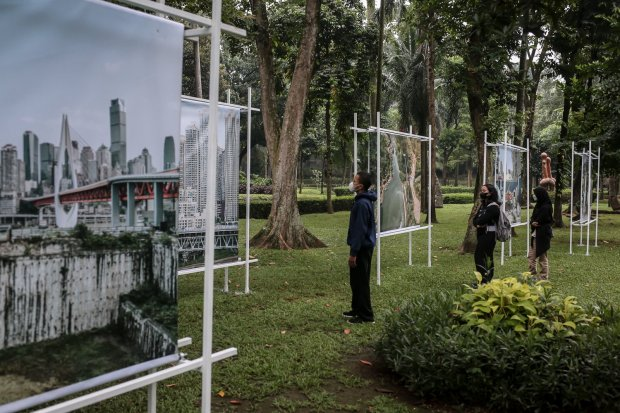

Internal Photo Festival (JIPFest) 2022

Pengunjung melihat karya fotografi yang dipamerkan dalam Internal Photo Festival (JIPFest) 2022 di soup N film, jakarta senin (12/9/2022). JIPFest 2022 tersebut menghadirkan kurang lebih 50 tokoh Fotografi dari 9 negara yang akan mengisi 53 acara. Dalam rangka pembukaan festival penyelenggara memandu tamu undangan untuk menyusuri lima titik lokasi permanen. Kelimanya adalah Taman Langsat, Suop N Film, Lamandau House, Teater Bulungan, dan kala di Kalijaga. Perhelatan ini didukung Dinas Pariwisata dan Ekonomi kreatif DKI Jakarta sejak edisi perdananya.
Tak hanya pameran fotografi ada beberapa rangkaian acara juga dihadirkan pada edisi ketiga tahun ini salah satunya yaitu Photo Fair. Fotografer bisa menjual langsung karya-karya mereka yang dipajang baik dalam fisik foto maupun buku. Dengan mengusung tema "Revival" yang berarti kebangkitan, ajang JIPFest mewakili semangat bangkit setelah melewati berbagai kesulitan dan perubahan selama masa pandemi.
©Copyright 2022-Farhan Ramadhani  Instagram: @danibos_granat
Instagram: @danibos_granat